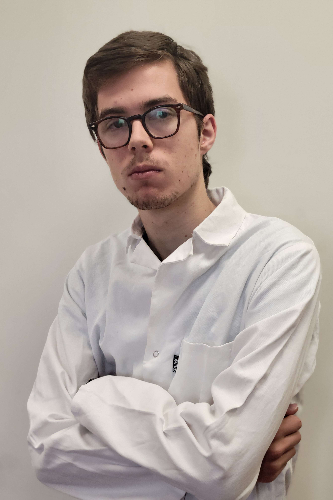

Notre Équipe
Découvrez les professionnels dédiés à votre santé et bien-être

Dr. RAHALINONY-NUNES Angelo
Médecin Généraliste
Expérience: 15 ans
Spécialités:
- Consultations générales
- Suivi médical
- Prévention et dépistage
- Gestion des maladies chroniques
- Vaccination
Horaires: Lun-Ven 8h-19h | Sam 9h-13h
"Votre médecin de confiance pour un suivi personnalisé"

Dr. CZAPLA Victor
Dentiste
Expérience: 12 ans
Spécialités:
- Soins des caries
- Détartrage
- Hygiène bucco-dentaire
- Détection précoce
- Conseils en prévention
Horaires: Lun, Mar, Jeu, Ven 8h-18h
"Approche douce et professionnelle"

MASSIOT Clément
Kinésithérapeute
Expérience: 10 ans
Spécialités:
- Rééducation post-traumatique
- Traumatismes sportifs
- Récupération fonctionnelle
- Renforcement musculaire
Horaires: Lun-Ven 9h-19h | Sam 9h-14h
"Votre accompagnement vers la récupération"

RAKOTOSON Lisa-Marie
Kinésithérapeute
Expérience: 8 ans
Spécialités:
- Douleurs chroniques
- Thérapies spécialisées
- Approche personnalisée
- Gestion du stress
Horaires: Lun, Mar, Jeu, Ven 8h-19h
"Pour une prise en charge adaptée à vos besoins"

DEWATINE Julien
Kinésithérapeute
Expérience: 7 ans
Spécialités:
- Prévention sportive
- Amélioration performance
- Préparation à l'effort
- Récupération athlétique
Horaires: Mar, Mer, Jeu, Ven 10h-19h
"Optimisez votre potentiel physique"

TASSIN Mathéo
Secrétaire Paramédical
Expérience: 6 ans
Responsabilités:
- Gestion des rendez-vous
- Accueil des patients
- Coordination praticiens
- Support administratif
Horaires: Lun-Ven 8h-19h | Sam 9h-13h
"Votre premier contact, notre meilleur accueil"

PEYRE Ethan
Technicien
Expérience: 20 ans
Spécialités:
- Projection réseau
- Gestion de projet
- Electronique
- Mise en place de logiciel informatique
Horaires: Lun, Mar, Mer, Jeu, Ven 8h-19h
"Soyez rassuré, l'expérience est la clé"
Nos Valeurs
Bienveillance
Chaque patient est traité avec respect et empathie dans un environnement accueillant.
Excellence
Nous nous engageons à offrir des soins de haute qualité avec les meilleures pratiques.
Collaboration
Notre équipe travaille ensemble pour une prise en charge globale et cohérente.
Professionnalisme
Formation continue et engagement pour rester à la pointe de la médecine.